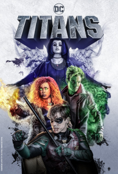
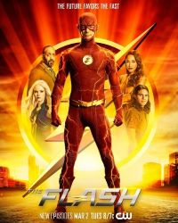
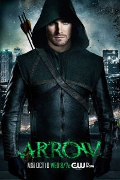

.png)
Titans
| Estreno | 12 de octubre de 2018 | Temporadas | 2 |
| Episodios | 24 |
| Duración | 40-50 minutos |
| Protagonistas | Brenton Thwaites, Anna Diop, Teagan Croft, Ryan Potter, Curran Walters, Conor Leslie, Minka Kelly, Alan Ritchson, Esai Morales, Chelsea Zhang, Joshua Orpin |
| Productor(es) | Robert Ortiz |
Sinopsis:
Se trata de una reunión de distintos personajes de los cómics de DC que se unen para formar un grupo de jóvenes superhéroes.
El antiguo compañero de Batman, Nigthwing, se encuentra con una serie de jóvenes héroes con problemas que necesitan un mentor desesperadamente para volver a encauzar sus vidas. Cuando Robin y Raven necesitan ayuda para lidiar con un complot que amenaza con destruir el planeta, se unen con Starfire y Chico Bestia, formando los Titanes. Los Titanes se presentan como una Liga de la Justicia Junior, en el que además de los mencionados, están otros superhéroes como Kid Flash, Aqualad, Wonder Girl y Speedy. Los pertenecientes a esta nueva Liga aprenderán a utilizar y controlar sus poderes.
Información obtenida de:SENSACINE
The umbrella academy

| Estreno | 15 de febrero de 2019 | Temporadas | 2 |
| Episodios | 20 |
| Duración | 40-60 minutos |
| Protagonistas | Elliot Pagenota, Tom Hopper, David Castañeda, Emmy Raver-Lampman, Robert Sheehan, Aidan Gallagher |
| Productor(es) | Kevin Lafferty, Sneha Koorse, Jamie Neese, Jason Neese, Ted Miller |
Sinopsis:
El mismo día en 1989, cuarenta y tres niños nacieron de forma inexplicable de mujeres aleatorias y sin conexión entre ellas, que no mostraron signos de embarazo el día anterior. Siete fueron adoptados por Sir Reginald Hargreeves, un empresario multimillonario, que creó la Umbrella Academy y prepara a sus «hijos» para salvar al mundo. Pero no todo va de acuerdo al plan. En su adolescencia, la familia se fracturó y el equipo se separó. Ahora, los seis que siguen vivos se reúnen tras la noticia de la muerte de Hargreeves. Luther, Diego, Allison, Klaus, Vanya y Número Cinco unen fuerzas para resolver el misterio alrededor de la muerte de su padre. Pero la extraña familia comienza a fracturarse debido a sus diferentes personalidades y habilidades, sin olvidarnos de la amenaza de un apocalipsis global.
Información obtenida de:Casa Spammer
The Flash
| Estreno | 7 de octubre de 2014 | Temporadas | 7 |
| Episodios | 147 |
| Duración | 41–45 minutos |
| Protagonistas | Grant Gustin, Candice Patton, Danielle Panabaker, Rick Cosnett, Carlos Valdes, Tom Cavanagh, Jesse L. Martin, Keiynan Lonsdale, Neil Sandilands, Hartley Sawyer, Danielle Nicolet, Jessica Parker Kennedy, Chris Klein, LaMonica Garrett, Efrat Dor, Brandon McKnight, Kayla Compton |
| Productor(es | J.P. Finn, Emily Silver, Brooke Roberts, Dermott Downs, Glen Winter |
Sinopsis:
Un policía forense llamado Barry Allen (Grang Gustin) consigue el don de una velocidad sobrehumana tras ser golpeado por un rayo al tiempo que explota un acelerador de partículas. Tras unos meses en coma, Barry descubre esa habilidad que utiliza para luchar contra el crimen con el nombre de Flash, un héroe enmascarado vestido de rojo que colabora con el equipo de Laboratorios Star.
Información obtenida de:AlohaCriticón
Arrow
| Estreno | 10 de octubre de 2012 | Temporadas | 8 |
| Episodios | 170 |
| Duración | 40-43 minutos |
| Protagonistas | Stephen Amell, Katie Cassidy, Colin Donnell, David Ramsey, Willa Holland, Susanna Thompson, Paul Blackthorne, Emily Bett Rickards, Colton Haynes, Manu Bennett, John Barrowman, Echo Kellum, Josh Segarra, Rick Gonzalez, Juliana Harkavy, Kirk Acevedo, Sea Shimooka, Katherine McNamara, Ben Lewis, Joseph David-Jones, La Mónica Garrett |
| Productor(es) | J. P. Finn, Wendy Mericle, Todd Pittson, Ben Sokolowski, Keto Shimizu, Glen Winter, James Bamford, Jon Wallace, Jennifer Lence, Carl Ogawa |
Sinopsis:
'Arrow' moderniza el personaje de Flecha Verde creado en 1941 por Mort Weisinger y George Papp para DC Comics. En esta nueva aventura, tras ser interpretado por el actor Justin Hartley en 'Smallville', el Arquero Esmeralda cobrará vida gracias a Stephen Amell, conocido por series como 'Hung (Superdotado)', 'Crónicas vampíricas' o 'Sensación de vivir'.
La historia de 'Arrow' no será completamente fiel al cómic e inventará para el personaje una nueva historia y un nuevo mundo. Flecha Verde es un superhéroe vestido a lo Robin Hood que tiene un arco muy especial. Sus flechas no son normales, sino que tienen pegamento, redes, gas lacrimógeno e incluso kryptonita para luchar contra sus enemigos. Su identidad secreta es la del multimillonario Oliver Queen, un 'playboy' que desaparece en un naufrafio en una peligrosa isla al sur del Mar de China y que, a fuerza de sobrevivir, se convierte en un maestro arquero, de las artes marciales y del camuflaje.
Aparte de Amell, 'Arrow' cuenta con Susanna Thompson ('Kings', 'NAVY'), David Ramsey ('Dexter'), Katie Cassidy ('Gossip Girl', 'Melrose Place 2.0', 'Sobrenatural') y Willa Holland ('Gossip Girl'). Thompson es Moira Queen, madre de Oliver de una gran belleza y casada de nuevo cuando su marido Robert y su hijo son dados por muertos durante cinco años tras un accidente naval; Ramsey se mete en la piel de John Diggle, un ex militar que sirvió con los Rangers en Afganistán y que se convierte en el chófer/guardaespaldas del protagonista; Cassidy encarna a Dinah 'Laurel' Lance, una abogada y ex amante de Oliver que además será la superheróina Black Canary, y Holland da vida a Thea, la hermana pequeña y lolita del joven Queen que en su ausencia ha pasado de ser una niña a jugar con los chicos y las drogas. También destaca el personaje de Tommy Merlyn, un niño rico malcriado y amigo íntimo de Oliver antes de que este volviera convertido en un héroe.
Información obtenida de:SENSACINE
Falcon and the winter soldier

| Estreno | 19 de marzo de 2021 | Temporadas | 1 |
| Episodios | 6 |
| Duración | 45 minutos |
| Protagonistas | Anthony Mackie, Sebastian Stan, Emily VanCamp, Wyatt Russell, Erin Kellyman, Danny Ramírez, Georges St-Pierre, Adepero Oduye, Don Cheadle, Daniel Brühl, Florence Kasumba, Julia Louis-Dreyfus |
| Productor(es) | Kevin Feige, Malcolm Spellman |
Sinopsis:
sigue la historia de Sam Wilson y Bucky Barnes tras los acontecimientos de Vengadores: Endgame, donde deben lidiar con el legado de poder llegar a ser el nuevo Capitán América.
Steve Rogers ha dejado atrás su papel de superhéroe tras entregar las gemas del infinito a su correspondiente línea temporal, otorgando así su escudo a Falcon. Sin embargo, éste no está muy de acuerdo de seguir su legado porque cree que solo hay un Capitán América y es él.
Aunque su relación nunca ha sido de mejores amigos, Falcon y el Soldado de Invierno deben luchar juntos contra una nueva amenaza, mientras también deben lidiar con sus problemas personales, como es el caso de Bucky y sus pesadillas por su pasado.
Información obtenida de:SENSACINE